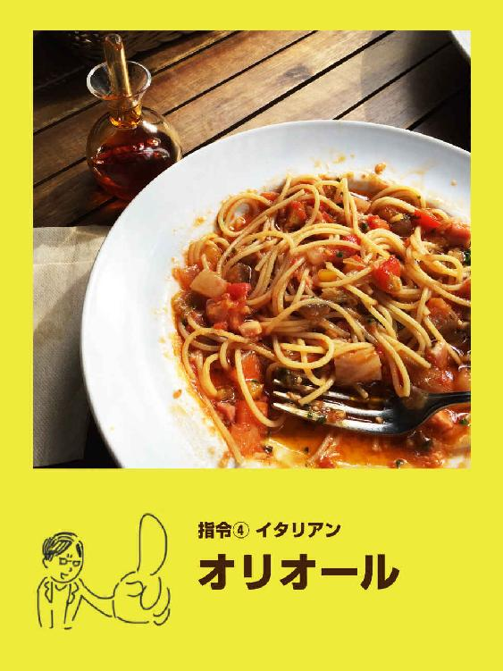
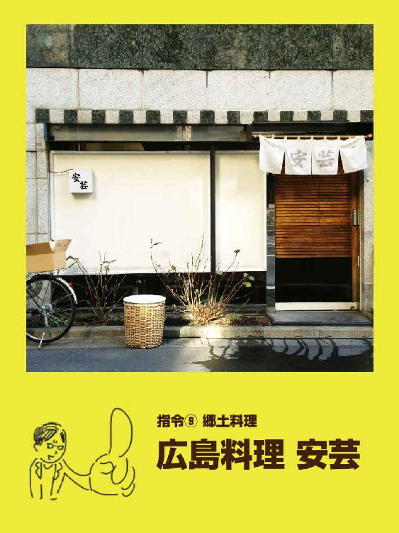

| アラサー社員が自腹で厳選！ 新宿御苑でランチが美味しいお店10 vol.01 | |
| 一式製作所 & 比惠島由理子 & 戸塚みゆき | |
| kinpusha (2016) | |

●お店情報
二丁目つけめんGACHI 新宿
〒160-0022
東京都新宿区新宿2-17-10 黒岩ビル 1F
TEL 03-5368-2637
取材日：2015年11月10日


●お店情報
礼華 新宿御苑店
〒160-0022
東京都新宿区新宿1-3-12 壱丁目参番館1F
TEL 03-5367-8355
取材日：2015年11月20日

●お店情報
香名屋新宿店
〒160-0022
東京都新宿区新宿1丁目15−18
TEL 03-3350-3987
取材日：2015年11月25日
●お店情報
kawara CAFE＆DINING 新宿本店
〒160-0022
東京都新宿区新宿3丁目11−11
TEL 03-3341-7931
http://www.sld-inc.com/kawara_shinjyuku.html
取材日：2015年11月30日


●お店情報
広島料理 安芸
〒160-0022
東京都新宿区新宿2丁目11−1
TEL 03-3350-5077
取材日：2015年12月1日

●お店情報
農家の台所 くにたちファーム 新宿3丁目店
〒160-0022
東京都新宿区新宿3-5-3 高山ランド会館4F
TEL 03-3226-4831
http://www.noukanodaidokoro.com/resto/shinjuku/
取材日：2015年12月4日
編集部より
本書を手にとっていただきありがとうございます。
冒頭でご紹介した通り、本書は株式会社デジカルの運営する「本づくりを楽に、楽しく」をモットーにした事業グループ、「一式製作所」が提供しています。
本書で紹介した店舗に関するメニューや写真、料金はスタッフが実際に食事をした当時の内容をそのまま使用しました。そのため、最新の情報とは異なる場合があります。楽しい食事の時間を過ごしていただくためにも、ご利用の際には事前にホームページなどで最新の情報をご確認ください。
＊店舗情報は本書編集時（2016年5月）の情報を掲載しています。
一式製作所について
一式製作所は、株式会社デジカルが運営する「本作りを一式で提供する、編集者のためのサービス」、その名も『ISSHIKI』をご提供しています。
「本作りを楽に楽しく」をモットーに、編集者・出版社・著者のみなさまのニーズに合わせて本作りを一式で執り行います。
一式製作所の制作事例紹介
『難しいことはわかりませんが、お金の増やし方を教えてください！』のデザイン一式制作
『難しいことはわかりませんが、お金の増やし方を教えて下さい！』
山崎元（著）、大橋弘祐（著）
単行本（ソフトカバー）／2015/11/11
http://www.amazon.co.jp/dp/4905073243
ISSHIKI｜一式製作所ではこちらの書籍の
・カバーデザイン
・本文デザイン
・イラスト
・組版 を担当しました。
ISSHIKIスタッフ
カバーデザイン：Fujitsuka

「太めの罫とイラストでポップにまとめています」
本文デザイン・組版：Tamatsukuri

「前編にわたって対話形式の内容で、デザインは難しかったですが、イラストのおかげでうまく柔らかい雰囲気を出すことができました」
イラスト：Hiejima
「全てのページでイラストのアイコンが入ってくるので、内容も理解しやすいと思います」
金風舎について
金風舎は、株式会社デジカルが運営するボーンデジタル出版社です。「読まれる本をつくる」をモットーに、現役世代にとって面白く役立つコンテンツを、今すぐダウンロードして読める電子書籍として出版しています。
これまでに発売されている金風舎の本
《増補改定版２０１５》本好きのためのAmazon Kindle 読書術
和田稔 著
２０１４年６月に発売した『本好きのためのAmazon Kindle 読書術』の増補改訂版２０１５ができました。この１年、Kindleで新たなサービスが導入されたのに合わせて、２０１５年版である本書は２０１４年版を増補改定しました。
電子書籍の特性を活かして可処分時間を増やそう！
【本書を読めばスッキリすること】
・今さら聞けない電子書籍のアレコレ
・そもそもKindleって？
・電子書籍ならではの読書法
・紙の本では実現できなかった...もっと本をたくさん読める！
マンガでわかる！ タスクシュート時間術〈超入門〉
岡野純 著
最初から「ムダをなくそう」「効率よく」と思うから予定どおりに終わらなかった？！時間管理術のつまずきポイントを分かりやすく説明します。
【こんな人に読んでもらいたい！】
・これから時間術を取り入れたいと思っている方
・「時間がない」が口ぐせになっている方
・予定どおりにタスクが終わらない。理想と現実のギャップに悩んでいる方
・時間管理のツールは何がいいのか？と迷っている方
インスタグラム・マーケティング入門
山田智恵 著
「Instagramアカウントを活用したマーケティング」の基本と最前線がわかる入門書です!
現職のソーシャルメディアマーケターが、Instagramの疑問とマーケティング活用の心構えを図解も交えてテンポよく解説します。
【このような方に読んでもらいたい！】
・Instagramをつかったマーケティングに興味がある人
・Instagramをブランディングに活用しようと考えている人
【金融イッキ読みシリーズ】先を見越した30代なら誰でも知っている「確定拠出年金のしくみ」
原彰宏 著
確定拠出年金を始めようと思っている人必読です！
確定拠出年金の基礎知識を学べる入門書です。
確定拠出年金ってそもそも何？ と思っている人。
どんな仕組みでどうすればいいのかわかりやすくお教えします。
【このような方に読んでもらいたい！】
・会社で確定拠出年金が導入されているけどどうすべきか困っている人
・公的年金だけでなく自分で将来の年金を積み立てたいと思っている人
Macの教科書 -基礎編- 時短Tips10
ばんか（bamka） 著
Macを使う人必読！
大好評『Macの教科書シリーズ』の第一弾！
少しの工夫でMacを快適に使える方法教えます。
【このような方に読んでもらいたい！】
・自分の生活の中でMacを前にしている時間が長い人
・Macの作業を効率的にしたいと思っている人
マンガでめっちゃわかるMacセキュリティ
まるっち 作・画
Macユーザー必読！
「Macだからウィルス対策しなくて良い」なんて思っていませんか？
そんなMacユーザーたちのため、セキュリティエンジニア・まるっちがペンをとり、難しいセキュリティのお話をマンガでわかりやすく説明します！
【このような方に読んでもらいたい！】
・Macユーザーでセキュリティ対策していない人
・セキュリティに不安はあるが、「難しそうだ」とつい放置している人
アラサー社員が自腹で厳選！
新宿御苑でランチが美味しいお店10 vol.01
発行日 2016年5月9日
著 作 一式製作所
比惠島由理子
戸塚みゆき
発 行 金風舎
（http://www.kinpusha.com）
制 作 ISSHIKI
（http://www.isshiki-seisaku.jp/blog/）
発 売 株式会社デジカル
（http://www.digical.co.jp）
〒160-0022
東京都新宿区新宿2-4-6 フォーシーズンビルアネックス7F
template 03-3353―5171
Copyright © 2016 ISSHIKI All rights reserved.
本書の無断転載、複写、頒布、公衆送信、翻訳、翻案等を禁じます。